دلائل على طبيعة المادة المظلمة من المجرات الأولى
الملخص
نستخدم ثمانيا وثلاثين محاكاة عالية الدقة لتشكل المجرات بين الانزياحين الأحمرين 10 و5 لدراسة أثر مرشح للمادة المظلمة الدافئة (WDM) كتلته 3 keV في الكون عند الانزياح الأحمر العالي. نركز اهتمامنا على دالة الكتلة النجمية ومعدل تشكل النجوم الكلي، ونبحث العواقب المترتبة على إعادة التأين، أي تطور كسر الهيدروجين المتعادل والعمق البصري لتشتت الإلكترونات. نجد أن ثلاثة مؤثرات مختلفة تسهم في التمييز بين تنبؤات المادة المظلمة الدافئة والمادة المظلمة الباردة (CDM): تخفض WDM عدد الهالات التي تقل كتلتها عن بضعة M⊙؛ وعند كتلة هالة ثابتة، تنتج WDM نجوما أقل مما تنتجه CDM؛ وأخيرا، عند كتل هالات دون M⊙، تمتلك WDM بعد إعادة التأين كسرا أكبر من الهالات المظلمة مقارنة بـ CDM. تتضافر هذه المؤثرات الثلاثة لتنتج دالة كتلة نجمية أدنى في WDM للمجرات ذات الكتل النجمية عند M⊙ وما دونها. عند ، تكون كثافة تشكل النجوم الكلية أقل بمعامل قدره اثنان في سيناريو WDM، وعند كسر هروب ثابت، يكون كسر الهيدروجين المتعادل أعلى بمقدار 0.3 عند . ولا يمكن التوفيق جزئيا بين هذه الكمية الأخيرة وبين CDM والرصد إلا بزيادة كسر الهروب من 23 في المئة إلى 34 في المئة. وبوجه عام، تبين دراستنا أن محاكاة تشكل المجرات عند الانزياح الأحمر العالي أداة رئيسية للتمييز بين مرشحي المادة المظلمة عند افتراض نموذج للفيزياء الباريونية.
keywords:
علم الكونيات: النظرية – المادة المظلمة – المجرات: التشكل – المجرات: الانزياح الأحمر العالي – المجرات: الحركيات والديناميكيات – الطرائق: عددية1 مقدمة
نتوقع في السنوات القليلة المقبلة أن تتاح للمجتمع العلمي كمية كبيرة من البيانات عن الكون عند الانزياح الأحمر العالي (). فمنشآت مثل مصفوفة أتاكاما الكبيرة المليمترية/دون المليمترية (ALMA) و James Webb Space Telescope (JWST) ستفتح نافذة رصدية جديدة تماما على أول مليار سنة من عمر كوننا. وستساعدنا هذه البيانات على فهم المراحل المبكرة من تشكل المجرات، وقد ترشدنا أيضا إلى فهم أفضل للجانب المظلم من كوننا، مثل طبيعة المادة المظلمة.
يعتمد النموذج الرائد حاليا للمادة المظلمة على مرشح بارد (CDM)، حفزته في الأصل إمكانية وجود جسيمات ضخمة ضعيفة التفاعل (WIMPs) تتنبأ بها بعض امتدادات النموذج القياسي للجسيمات (Bertone et al., 2005). ويفترض أن تقع كتل هذه المرشحات في مجال عدة GeV (Bergström, 2012)، وقد جرى البحث عنها على نطاق واسع في المختبرات تحت الأرض، لكن بنجاح ضئيل جدا حتى الآن (انظر Roszkowski et al., 2018, لمراجعة حديثة). إن غياب الكشف المباشر عن جسيمات CDM محتملة يثير سؤالا عما إذا كان جسيم المادة المظلمة قد يمتلك كتلة أصغر بكثير مما اعتقد أولا، وربما يقع في مجال keV، مما يجعله ما يطلق عليه عادة المادة المظلمة الدافئة (WDM).
طرحت WDM في البداية حلا ممكنا لما يسمى «أزمة المقاييس الصغيرة» في CDM (e.g Moore, 1994; Klypin et al., 1999; Moore et al., 1999; Colín et al., 2000). وفي الآونة الأحدث، تراكمت الأدلة على أن حل هذه المشكلات يكمن على الأرجح في القطاع الباريوني. فقد تمكنت محاكيات ونماذج شبه تحليلية حديثة من التوفيق بين كون CDM والأرصاد، سواء فيما يخص عدد توابع المجرات (Bullock et al., 2000; Macciò et al., 2010; Sawala et al., 2016; Buck et al., 2018) أو توزيع المادة المظلمة على المقاييس الصغيرة من خلال توفير معالجة أدق لتشكل المجرات والفيزياء الباريونية ضمن نموذج CDM (Governato et al., 2010; Zolotov et al., 2012; Di Cintio et al., 2014; Oñorbe et al., 2015; Frings et al., 2017).
علاوة على ذلك، وضعت الحدود الحالية المستمدة من غابة لايمان- (Ly) على طيف قدرة المادة (Iršič et al., 2017; Yèche et al., 2017) قيودا صارمة جدا على كتلة مرشح WDM محتمل (حراري)، وهي الآن مقيدة بأن تكون keV. ومع هذه الكتلة، سيكون مرشح WDM عمليا غير قابل للتمييز عن مرشح بارد فيما يتعلق بتوزيع المادة المظلمة على المقاييس الصغيرة (Colín et al., 2008; Macciò et al., 2012; Shao et al., 2013; Herpich et al., 2014) أو عدد التوابع (Macciò & Fontanot, 2010; Lovell et al., 2016). ويدعو تشابه نماذج WDM المسموح بها حاليا مع CDM على المقاييس الصغيرة إلى مجال جديد للبحث عن دلائل إضافية على الكتلة الفعلية لمرشح المادة المظلمة، وقد يكون هذا المجال هو الكون عند الانزياح الأحمر العالي.
في WDM، وبسبب نقص القدرة على المقاييس الصغيرة، يتأخر تشكل البنى مقارنة بسيناريو بارد. وفي الزمن الحاضر، محيت آثار هذا التأخر الأولي بفعل لاخطية تشكل المجرات، لكنه قد يظل ظاهرا في المراحل المبكرة جدا من الكون، حين تشكلت المجرات الأولى. ويمكن أن تتجلى هذه البصمة في تشكل النجوم الأولى (مثلا Gao & Theuns, 2007)، أو المجرات الأولى (مثلا Dayal et al., 2015). ومؤخرا، استخدم Corasaniti et al. (2017) قياسات دالة لمعان المجرات عند 6 و7 و8 لاشتقاق قيود على WDM. وقد جمعوا بين محاكيات -جسم (جاذبية صرفة) عالية الدقة جدا ومنهج تجريبي قائم على مطابقة وفرة الهالات لاشتقاق تنبؤات لدالة اللمعان في نماذج مختلفة للمادة المظلمة. وحصلوا على حد أدنى لكتلة جسيم الأثرية الحرارية في WDM قدره 1.5 keV عند مستوى 2. وتعتمد هذه الدراسة على محاكيات للمادة المظلمة فقط قد تفوت بعض التأثيرات اللاخطية بين طبيعة المادة المظلمة وتشكل المجرات، وهو قيد محتمل.
ويعتقد أيضا أن المجرات الأولى هي المصدر الرئيسي للفوتونات المؤينة المسؤولة عن إعادة التأين الكوني، وهو ما قد يوفر قيدا آخر على طبيعة المادة المظلمة. درست دراسات حديثة كثيرة الصلة بين WDM وإعادة التأين (مثلا Lapi & Danese, 2015; Tan et al., 2016; Lopez-Honorez et al., 2017; Das et al., 2018). وعلى وجه الخصوص، وسع Carucci & Corasaniti (2019) عمل Corasaniti et al. (2017) لاشتقاق كسور الهروب اللازمة للفوتونات المؤينة من أجل مطابقة الأرصاد الحديثة، ولكن نظرا للطبيعة غير المؤكدة لهذه الكمية، فإن النتائج مستقلة إلى حد كبير عن سيناريو المادة المظلمة الأساسي. وتجد دراستان تستخدمان طرائق شبه تحليلية لدراسة WDM في سياق الانزياح الأحمر العالي وإعادة التأين أيضا أنه مع سيناريو للمادة المظلمة متسق مع القيود الرصدية، تنتقل الجمهرة المؤينة إلى كتل هالات أدنى، إلا أن التمييز بين CDM وWDM بالأرصاد الحالية سيكون صعبا (Bose et al., 2016; Dayal et al., 2017). وعلاوة على ذلك، استخدم Villanueva-Domingo et al. (2018) محاكيات هيدروديناميكية في صندوق حجمه 20 Mpc لاشتقاق قيود على WDM من دوال لمعان المجرات، وتاريخ التأين، وتأثير غان-بيترسون. وخلصوا إلى أنه على الرغم من وجود بعض التأثيرات بالفعل، فإن أي استنتاجات عن طبيعة المادة المظلمة مشتقة من مرصودات إعادة التأين تبقى معتمدة على النموذج إلى أن تصبح نمذجة التأثيرات الباريونية (ولا سيما تشكل النجوم والتغذية الراجعة) مقيدة على نحو أفضل. وإحدى السبل الممكنة لتثبيت المعاملات التي تصف الفيزياء الباريونية (إضافة إلى الحصول على قيود أفضل من الأرصاد) هي استخدام الأرصاد عند انزياح أحمر واحد (غالبا ) قيدا، ثم فحص التنبؤات عند انزياح أحمر أعلى بكثير.
في هذه الدراسة، نسعى إلى وصل الكون عند الانزياح الأحمر العالي والمنخفض عبر محاكيات هيدروديناميكية لتشكل المجرات. ونريد أن نمدد إلى الكون عند الانزياح الأحمر العالي () الفيزياء الباريونية المستخدمة في مشروع NIHAO (Wang et al., 2015)، التي أثبتت نجاحا كبيرا في إعادة إنتاج أرصاد رئيسية في الكون عند الانزياح الأحمر المنخفض ()، مثل علاقة الكتلة النجمية - كتلة الهالة (Wang et al., 2015)، ودالة السرعة المحلية (Macciò et al., 2016)، وعلاقات تحجيم المجرات (Dutton et al., 2017).
نستخدم 19 محاكاة تقريبية عالية الدقة في كل نموذج كوني (بمجموع 38) لأخذ عينة دقيقة من دالة الكتلة النجمية في مدى الانزياح الأحمر ، وندرس أثر مرشح للمادة المظلمة كتلته 3 keV في عدة مرصودات حالية ومستقبلية، مثل دالة الكتلة النجمية، ومعدل تشكل النجوم الكلي، وكسر الهيدروجين المتعادل، والعمق البصري للخلفية الكونية الميكروية (CMB).
2 المحاكيات
أجريت جميع المحاكيات هنا في نموذج كوني مسطح /، بمعاملات من Planck Collaboration et al. (Planck Collaboration et al., 2014): معامل هابل km s-1 Mpc-1، وكثافة المادة ، وكثافة الإشعاع ، وكثافة الطاقة المظلمة ، وتطبيع طيف القدرة ، وميل طيف القدرة .
2.1 الشروط الابتدائية
ولدت الشروط الابتدائية لكل من محاكيات -جسم والمحاكيات الهيدروديناميكية التقريبية لتشكل المجرات باستخدام نسخة معدلة من حزمة grafic2 (Bertschinger, 2001; Penzo et al., 2014). وبالنسبة إلى WDM، فإن العملية مطابقة لـ CDM باستثناء تعديل في طيف القدرة. واستعملت البذرة العشوائية نفسها لتوليد جميع أزواج الشروط الابتدائية CDM/WDM 3 keV.
حسبت أطياف قدرة WDM باستخدام دالة انتقال نسبية، كما في Bode et al. (2001):
| (3) |
حيث إن هي كتلة جسيم WDM و هي الكثافة.
2.2 محاكيات -جسم
| Box | Size | N | mdm | |
|---|---|---|---|---|
| Mpc | M⊙ | kpc | ||
| 1 | ||||
| 2 | ||||
| 3 | ||||
| 4 | ||||
| 5 | ||||
| 6 |
أولا، نجري سلسلة من محاكيات -جسم التي تشمل المادة المظلمة فقط، والمفصلة في الجدول 1. استخدمنا ستة صناديق تتراوح أطوال أضلاعها من 5 إلى 200 Mpc مع أعداد جسيمات متفاوتة. وضبط التليين على 1/40 من المسافة بين الجسيمات على شبكة الشروط الابتدائية. ومن هذه المجموعة من المحاكيات، نستطيع بعد ذلك أخذ عينة من مدى واسع من كتل الهالات عند .
2.3 المحاكيات الهيدروديناميكية
من محاكيات المادة المظلمة فقط، اختيرت 19 هالة لإعادة محاكاتها بدقة أعلى مع تضمين الباريونات. يبين الجدول 2 مستويات الدقة الخمسة المستخدمة في محاكياتنا. وقد اختيرت هذه المستويات بحيث تضم نحو مليون جسيم داخل نصف القطر الفيروسي للمجرة عبر المدى الكامل لكتل الهالات.
| Level | ||||
|---|---|---|---|---|
| M⊙ | M⊙ | pc | pc | |
| 1 | ||||
| 2 | ||||
| 3 | ||||
| 4 | ||||
| 5 |
أجريت جميع المحاكيات باستخدام شفرة SPH المسماة gasoline (Wadsley et al., 2004, 2017). وأعدت الشفرة ضمن إطار مشروع NIHAO (Wang et al., 2015)، بما يشمل تبريد المعادن، والإثراء الكيميائي، وتشكل النجوم، والتغذية الراجعة من النجوم الضخمة والمستعرات العظمى (SN).
تتشكل النجوم من غاز أبرد من = 15,000 K وأكثر كثافة من . وكانت كفاءة تشكل النجوم المستخدمة = 0.1. وأدرج التبريد عبر الهيدروجين والهيليوم وخطوط معدنية متنوعة كما في Shen et al. (2010)، بما في ذلك التأين الضوئي والتسخين من الخلفية فوق البنفسجية (UV) في Haardt & Madau (2012).
تطبق تغذية SN الراجعة باستخدام منهج موجة الانفجار كما وصفه Stinson et al. (2013)، وهو يعتمد على تأخير تبريد الجسيمات القريبة من حدث SN. ونضمّن أيضا ما أسميناه التغذية الراجعة النجمية المبكرة: نحقن 13 في المئة من لمعان النجوم فوق البنفسجي طاقة حرارية قبل وقوع أي أحداث SN من دون تعطيل التبريد (انظر Stinson et al., 2013, لمزيد من التفاصيل).
ثبت أن مجرات NIHAO متسقة مع مدى واسع من خصائص المجرات عند الانزياح الأحمر المنخفض، مثل علاقة الكتلة النجمية - كتلة الهالة ومعدلات تشكل النجوم (Wang et al., 2015)؛ وحركيات الأقراص النجمية (Obreja et al., 2016)؛ ومحتوى الغاز البارد والحار (Stinson et al., 2015; Wang et al., 2016; Gutcke et al., 2016)؛ كما أنها تحل مشكلة «أكبر من أن تفشل» (Dutton et al., 2016). ومن ثم فنحن واثقون من أن المحاكيات المعروضة هنا يمكن استخدامها أدوات معقولة لدراسة أثر نموذج WDM الكوني في الكون عند الانزياح الأحمر العالي.
حددت الهالات في جميع المحاكيات باستخدام محدد الهالات الهجين MPI+OpenMP المعروف باسم Amiga Halo Finder 11 1 http://popia.ft.uam.es/AMIGA (AHF; Knollmann & Knebe, 2011). وتعرف الكتل الفيروسية للهالات بأنها الكتلة داخل كرة تحتوي مرة من كثافة المادة الحرجة الكونية. ويرمز إلى الكتلة الفيروسية (الكلية) بـ ، ويشير إلى الكتلة النجمية الكلية ضمن نصف القطر الفيروسي.
إلى جانب المجرات الهدف البالغ عددها 19، نضم أي مجرة داخل محاكيات التقريب لدينا تضم أكثر من 10,000 جسيم. وننظر أيضا في الهالات المركزية فقط، أي لا في التوابع، ونشترط عدم وجود تلوث من جسيمات مادة مظلمة أكبر منخفضة الدقة، أي أي جسيم أكبر من أدنى مستوى في الجدول 2. والنتيجة هي نحو 100 مجرة عند ، وعشرات المجرات عند . أجري تحليل المحاكاة باستخدام حزمة Python pynbody (Pontzen et al., 2013). ونفذت جميع ملاءمات المعاملات باستخدام مونت كارلو بسلسلة ماركوف (MCMC) عبر حزمة Python emcee (Foreman-Mackey et al., 2013).
3 النتائج
فيما يأتي، سنعرض نتائج محاكيات -جسم ومحاكيات المجرات في نموذجي CDM وWDM الكونيين عند . في جميع الرسوم، تعرض نتائج CDM باللون الأزرق مع دوائر، بينما تعرض نتائج WDM بكتلة 3 keV باللون الأحمر مع مربعات. يبين القسم 3.1 دوال كتل الهالات المستخلصة من محاكيات -جسم. وفي القسم 3.2، نجد علاقة الكتلة النجمية - كتلة الهالة المستخلصة من محاكياتنا. ويعرض القسم 3.3 نتائجنا لكسر المجرات التي تشكل نجوما بدلالة كتلة الهالة. ويبين القسم 3.4 دوال الكتلة النجمية الناتجة عن التفاف جميع النتائج السابقة. وأخيرا، في القسم 3.6، نقارن نتائجنا لتاريخ إعادة التأين والعمق البصري لـ CMB مع القيود الرصدية.
3.1 دالة كتلة الهالات
استخدمت صناديق -جسم لبناء دوال كتلة الهالات وملاءمتها. واستخدمنا دالة شختر معدلة ذات خمسة معاملات (Schechter, 1976):
| (4) |
حيث إن و و و و معاملات ملاءمة ترد في الملحق A، ويمثل الكمية . وقد واجهت دالة شختر الأصلية صعوبة في ملاءمة نتائج WDM، لذلك اعتمدنا هذه النسخة المعدلة لكلا النموذجين الكونيين. ويعد عدم اليقين لكل حاوية كتلة هالية بواسونيا.
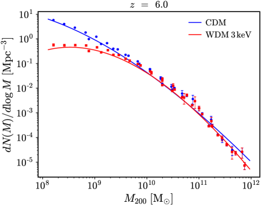
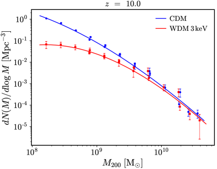
تمثل دالة كتلة الهالات وفرة الهالات عند كتلة معطاة. وكما يبين الشكل 1، تظهر دوال كتلة الهالات انخفاضا في الكثافة العددية للهالات منخفضة الكتلة في نموذج WDM الكوني، وهو نتيجة مباشرة لنقص القدرة على المقاييس الصغيرة في طيف قدرة WDM. وتمثل الخطوط ملاءمة معاملات MCMC، وترد قيمها في الملحق A. وتتبع العلاقات في النموذجين الكونيين الاتجاه نفسه عند . ومن المهم أن الفرق بين CDM وWDM يكون أكبر عند الانزياح الأحمر الأعلى. وعند ، ستكون دوال كتلة الهالات متطابقة في السيناريوهين.
3.2 علاقة الكتلة النجمية - كتلة الهالة
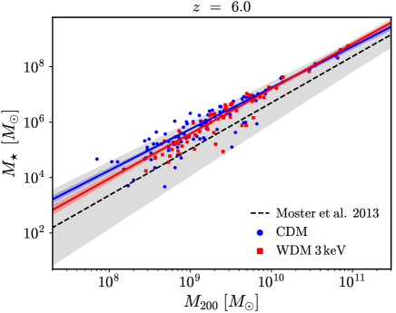
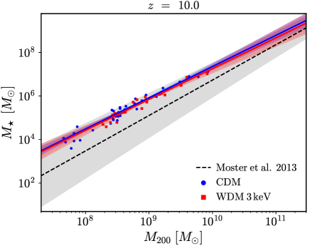
يبين الشكل 2 علاقة الكتلة النجمية - كتلة الهالة المستخلصة من مجموعة محاكيات التقريب المنفذة في نموذجي CDM وWDM الكونيين.22 2 كي تدرج الهالات في الشكل 2 وفي الملاءمة المستخدمة في القسم 3.6، نشترط أن تحتوي على الأقل على 10 جسيم نجمي. وبناء على هذه العلاقة، لا يمكن تمييز مجرات CDM وWDM بعضها من بعض. وبينما تتبع محاكياتنا عن كثب علاقة/علاقات مطابقة الوفرة عند انزياح أحمر أدنى (انظر Wang et al., 2015)، فإن علاقتنا المتنبأ بها عند هذه الانزياحات الحمراء العالية تقع باستمرار فوق الاستقراء من Moster et al. (2013).33 3 تستخدم محاكيات NIHAO الأصلية الخاصة بـ Wang et al. (2015) الكتلة النجمية داخل 20 في المئة من نصف القطر الفيروسي، وهو ما سيقرب نتائجنا أكثر إلى العلاقة. وعند الانزياح الأحمر العالي، يكون هذا القطع محافظا أكثر من اللازم. وتشير هذه الإزاحة (الصغيرة في محاكياتنا) إلى أنه ينبغي استخدام استقراءات الانزياح الأحمر العالي للعلاقات المعايرة عند بحذر. وتعرض دراسات كثيرة عند الانزياح الأحمر العالي إزاحات مشابهة؛ انظر مثلا Rosdahl et al. (2018)، ولكن انظر أيضا Ma et al. (2018). ويوضح هذا الشكل أيضا أن كسرا أكبر من مجرات WDM يبقى مظلما عند الانزياح الأحمر العالي مقارنة بـ CDM، كما يتضح من العدد الأصغر للنقاط الحمراء نسبة إلى الزرقاء. وندرس هذا الأثر بمزيد من التفصيل في القسم التالي.
تمثل الخطوط المتصلة ملاءمة خطية للبيانات اللوغاريتمية، وتجرى بصورة مستقلة لكل نموذج كوني وانزياح أحمر. وتولد المعاملات الوسيطة (1) المستخلصة من عينة MCMC الخطوط المتصلة (والمناطق المظللة)، وترد قيمها في الملحق A. وتنقل قيم عدم اليقين هذه (الصغيرة) إلى نتائج دالة الكتلة النجمية. وكما يبين الشكل 2، يتصرف CDM وWDM بصورة متشابهة. ونجد دليلا ضعيفا على تطور التطبيع مع الانزياح الأحمر، إذ يمتلك الانزياح الأحمر الأدنى قيمة أعلى لمقطع الملاءمة الخطية، وهو ما يتسق مع Ceverino et al. (2017). غير أن Ma et al. (2018) لا يجدون أي تطور مع الانزياح الأحمر.
3.3 الكسر المظلم
يصبح تشكل النجوم أقل كفاءة عند الكتل المنخفضة، إلى حد لا يستطيع فيه أي غاز أن ينهار إلى المركز والهالة وأن يشكل نجوما بسبب الخلفية فوق البنفسجية (Gnedin, 2000). ويبدو أن الشكل 2 يشير إلى كسر أكبر من المجرات «المظلمة» في WDM مقارنة بـ CDM، نظرا إلى أن عدد المربعات الحمراء أقل من الدوائر الزرقاء. ولتكميم هذا الأثر، نريد حساب كسر الأجسام القادرة على تكوين النجوم بدلالة كتلتها الفيروسية. وتعد الهالة مظلمة إذا لم تحتو أي جسيمات نجمية.
تعرض النتائج في الشكل 3 من أجل و. ومنحنى الملاءمة هو دالة ظل زائدية ذات معاملين
| (5) |
حيث إن و معاملان، ويمثل مرة أخرى . وتمثل النقاط المدرج التكراري لـ ، حيث إن هي عدد الهالات المظلمة و هي العدد الكلي للهالات في الحاوية. وعند ملاءمة هذا المنحنى، يشتق عدم اليقين في من عدد الهالات في كل حاوية. وتولد قيم عدم اليقين الوسيطة (1) الناتجة للمعاملات الملاءمة من عينة MCMC وتمثل بالخط المتصل (والمنطقة المظللة)، وترد جميع القيم في الملحق A. ونجد دليلا ضعيفا على أن WDM تظهر انتقالا أكثر حدة في الكسر المظلم، وهو ما يتسق مع Macciò et al. (2019).
في هذه المحاكيات، تقع إعادة التأين عند ، وتكون إزاحة الحد الأدنى لكتلة الهالة اللازمة لتشكل النجوم واضحة. في الأزمنة الأسبق (انزياح أحمر أعلى)، تكون التي تتشكل عندها النجوم أدنى بسبب خلفية فوق بنفسجية أضعف. وعند ، تمتلك WDM كتلة دنيا لتشكل النجوم أقل من CDM، والعكس صحيح عند الانزياح الأحمر الأدنى. ونتيجة أخرى مثيرة للاهتمام هي أن الاقتراب فقط من يضمن أن النجوم ستتشكل في المجرات عند هذا الانزياح الأحمر. والتحفظ الرئيسي على هذه الملاحظات هو أن قيم عدم اليقين في كبيرة بسبب قلة أعداد الهالات لدينا، وأن التمييز بثقة بين النموذجين الكونيين يتجاوز قدرتنا الإحصائية.
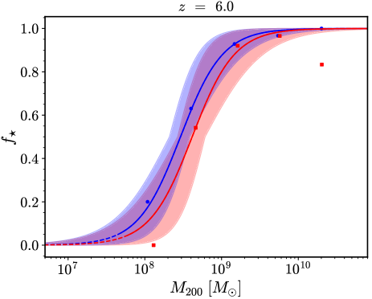
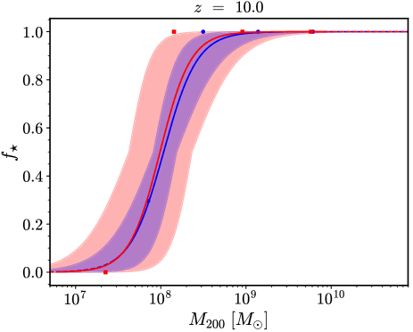
3.4 دالة الكتلة النجمية
الخطوة التالية هي التفاف النتائج من الأقسام السابقة للحصول على دالة الكتلة النجمية. بدأنا من علاقة الكتلة النجمية - كتلة الهالة الملاءمة، بما في ذلك عدم اليقين في المعاملات، لمجموعة محاكيات المجرات لدينا (الشكل 2) لتحويل كتل الهالات في الشكل 1 إلى كتل نجمية. ثم ضربنا في الكسر، بما في ذلك عدم اليقين في الملاءمة، للمجرات التي شكلت نجوما فعلا (الشكل 3) للحصول على الكثافة العددية التفاضلية للمجرات بدلالة كتلتها النجمية، وهي معروضة في الشكل 4. ويمثل الخط المتصل معاملات أفضل ملاءمة (والوسيط)، والمنطقة المظللة هي قيم عدم اليقين المنقولة، حيث تهيمن علاقة - عند الكتل النجمية العالية (قلة من الهالات عالية الكتلة) وتهيمن عند الكتل النجمية المنخفضة (إذ يصبح كبح تشكل النجوم مهما). وينعكس عدم اليقين في - في عدم اليقين في massCeverino2017 النجمية (محور )، بينما تحدد عدم اليقين في الكثافة العددية (محور ).
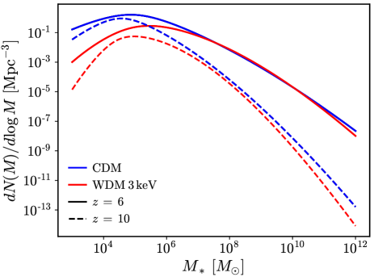
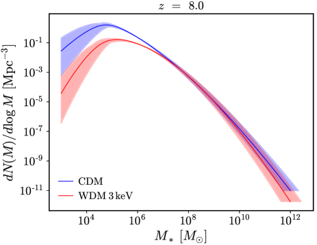
كما هو متوقع، تختلف دوال الكتلة النجمية اختلافا جوهريا فقط عند الكتل المنخفضة، بينما تعود الفروق الصغيرة عند الكتل العالية إلى التباين الكوني وإحصاءات العدد المنخفض. وتتنبأ WDM بعدد أقل من المجرات منخفضة الكتلة مقارنة بـ CDM، مع فرق أكبر عند الانزياح الأحمر العالي. وبالنسبة إلى اختيارنا لكتلة المرشح الدافئ (3 keV)، فإن الفرق النسبي بين CDM وWDM لا يتجاوز معاملا من بضعة أضعاف للكتل النجمية حول (انظر أيضا Villanueva-Domingo et al., 2018), وهو أدنى مما يمكن رصده حاليا (Bouwens et al., 2015; Bouwens et al., 2017; Ceverino et al., 2017). ومن جهة أخرى، تتفق نتائجنا مع Corasaniti et al. (2017)، الذين وجدوا حدا أدنى قدره 2 keV من تحليل دالة اللمعان. وقد تحسن الأرصاد والمنشآت المستقبلية هذا الحد (مثلا JWST)، ولكن حينئذ ستكون هناك حاجة إلى فهم بالغ الدقة للفيزياء الباريونية المنفذة في المحاكيات، كما نوقش في Villanueva-Domingo et al. (2018).
3.5 معدلات تشكل النجوم
لا يكتسب معدل تشكل النجوم (SFR) في مجرة ما أهمية بذاته فحسب، بل يعتمد تاريخ إعادة تأين الكون اعتمادا حاسما على هذه الكمية. أولا، نحسب علاقة SFR- لمجراتنا بدلالة الانزياح الأحمر، حيث يشمل SFR تشكل النجوم الواقع خلال 100 Myr الماضية عند الانزياح الأحمر المعني. وكما يبين الشكل 5، يتبع CDM وWDM العلاقة نفسها عند ، وينطبق الأمر نفسه على الانزياحات الحمراء الأدنى والأعلى. ومع أخذ ذلك في الاعتبار، نلائم هذه العلاقة بقانون قوى واحد لكلا النموذجين عند كل انزياح أحمر (كما يوضح الخط المتقطع). ونفذ إجراء MCMC المعتاد مع ترجيح كل قيمة SFR بعدد الجسيمات النجمية التي تشكلت خلال 100 Myr الماضية. وترد قيم أفضل ملاءمة للميل والمقطع44 4 بوصفه فحصا، حسب عدم اليقين في كما فصل في ملاءمات العلاقات السابقة، لكن القيم الناتجة كانت صغيرة جدا وستكون دون قيم عدم اليقين في - و تماما. ولذلك لا يعرض عدم اليقين في هذه العلاقة ولا ينقل إلى دوال الكتلة النجمية. في الملحق A، وهي مشابهة لتلك الموجودة في Ma et al. (2018). وخلافا لـ Ma et al. (2018)، نجد دليلا على تطور المقطع أو التطبيع مع الانزياح الأحمر، من دون أي تطور في الميل. لذلك، يتوقع عند انزياح أحمر أدنى معدل SFR أقل للكتلة النجمية نفسها.
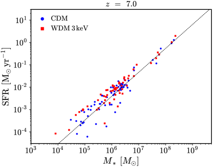
ثم نجمع دوال الكتلة النجمية لدينا مع ملاءمات SFR مقابل للحصول على كثافة SFR كلية متكاملة، ، بدلالة الانزياح الأحمر (الشكل 6). وقد أُجري تكامل دوال الكتلة النجمية بين ، والنتائج غير حساسة لتغييرات قدرها رتبة مقدار واحدة في هذه الحدود. وجرت ملاءمة قيم المستخلصة لـ وفق:
| (6) |
حيث إن و و و معاملات، وترد قيم أفضل الملاءمة المشتقة من إجراء MCMC المعتاد للنموذجين الكونيين في الجدول 7. لاحظ أن أشرطة الخطأ تمثل قيم عدم اليقين المنقولة من العلاقات السابقة وتتناقص عند الانزياح الأحمر الأدنى لأن لدينا قدرة إحصائية أكبر. وعند ، تكون WDM أدنى بمعامل اثنين من حالة CDM، ويتناقص هذا المعامل مع تناقص الانزياح الأحمر. وبحلول ، يصبح النموذجان الكونيان متشابهين جدا وغير قابلين للتمييز أساسا عند انزياح أحمر أدنى. يقع كلا السيناريوهين ضمن مدى القيم بين النتائج غير المصححة والمصححة للغبار من Bouwens et al. (2015) كما تشير المنطقة المظللة في الشكل. لاحظ أننا لا نصحح للغبار ولا نأخذ في الاعتبار أي تأثيرات تتجاوز تشكل النجوم الداخلي لدينا.
| Cosmology | ||||
|---|---|---|---|---|
| CDM | 0.00131 | 0.254 | 6.03 | 0.0937 |
| WDM | 0.676 | 0.377 | 6.16 | 0.381 |
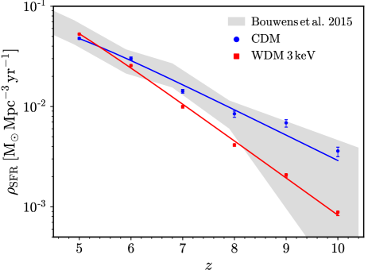
3.6 تاريخ إعادة التأين
في هذا القسم، نستخدم جماعات المجرات المتنبأ بها في نماذج CDM وWDM لاستكشاف آثار نموذج WDM الكوني في إعادة التأين الكوني، باستخدام نموذج ODE بسيط وشائع الاستخدام. ونؤكد أن هذا النموذج تقدير تقريبي لتاريخ إعادة التأين، لكنه خطوة أولى كافية بالنظر إلى حالات عدم اليقين في نمذجة إعادة التأين. وعلى وجه الخصوص، نعامل ، وهو كسر الفوتونات المؤينة التي تهرب من المجرات إلى الوسط بين المجرات IGM، بوصفه معاملا حرا يضبط لمطابقة القياسات الرصدية الحالية.
نتبع المنهج الموصوف في Kuhlen & Faucher-Giguère (2012)، بادئين بهذه المعادلة التفاضلية للكسر المؤين:
| (7) |
هنا، هي كثافة الهيدروجين المسايرة، بدلالة كسر كتلة الهيدروجين ، وكثافة الباريونات ، والكثافة الحرجة . وزمن إعادة الاتحاد في IGM هو:
| (8) | ||||
| (9) |
حيث إن هو معامل إعادة الاتحاد من الحالة B عند درجة حرارة IGM قدرها K، بقيمة cm3 s-1 (Storey & Hummer, 1995)، و هو كسر كتلة الهيليوم. و هو عامل التكتل الفعال للغاز المؤين في IGM؛ ونعتمد في هذا العمل قيمة ثابتة مقدارها 3. وبالطبع، فإن قيمة أدنى ستخفض الناتجة، والعكس صحيح. فعلى سبيل المثال، تتطلب = 1 قيمة أدنى بنحو 10 في المئة.
وأخيرا، هو معدل الإنتاج الكلي للفوتونات المؤينة:
| (10) |
حيث إن هو الكسر الفعال للفوتونات التي تهرب من المجرات لإعادة تأيين IGM، و هي كفاءة إنتاج الفوتونات المؤينة لجمهرة نجمية نموذجية لكل وحدة زمن ولكل وحدة SFR:
| (11) |
حيث اختيرت القيمة في الطرف الأيمن لتكون متسقة مع أعمال حديثة، مثل Lovell et al. (2018). وفي الواقع، تشير بعض الأعمال الرصدية إلى قيمة أعلى (مثلا Topping & Shull, 2015). والقيمة الدقيقة غير مهمة لأن متدهورة تماما مع ، وتشير قيمة أعلى ببساطة إلى قيمة أدنى، والعكس صحيح.
طورت المعادلة التفاضلية عكسيا في الزمن، بدءا من كسر مؤين قدره عند ، وهي قيمة متسقة مع نتائج المحاكيات، مثل Dixon et al. (2016)، ومع أرصاد قياسات العمق البصري لـ CMB (Planck Collaboration et al., 2016). وكان هذا التبسيط ضروريا بسبب عينتنا الصغيرة من الهالات ذات الكتلة الكافية عند ، مما يحد من دقة دوال الكتلة النجمية المتنبأ بها (انظر الشكل 1). وعوملت بوصفها معاملا حرا وضبطت بصورة منفصلة لسيناريوهي CDM وWDM بهدف مطابقة الأرصاد وبلوغ . وجدنا أنه في CDM تطابق البيانات المرصودة جيدا، بينما يمكن إجبار WDM على مطابقة CDM بقيمة أعلى. ويلخص الشكل 7 نتائجنا لتاريخ التأين. ولا يؤثر افتراض الكسر المؤين الابتدائي تأثيرا مهما في نتائجنا. فعلى سبيل المثال، يؤدي تضاعف الكسر المؤين الابتدائي إلى خفض الناتجة عند مستوى النسبة المئوية.
إن القيمة الفيزيائية لـ ، بما في ذلك اعتمادها المحتمل على الانزياح الأحمر وكتلة الهالة، موضوع نقاش محتدم. وقد أعطت قياسات المجرات القريبة قيما صغيرة جدا لا تتجاوز بضعة في المئة (مثلا Rutkowski et al., 2017; Steidel et al., 2018). وقد رصد Faisst (2016) قيمة أكبر بعض الشيء ودليلا على ازدياد القيم مع الانزياح الأحمر. ولم تصل المحاكيات إلى توافق، لكن يبدو أنه يتغير تغيرا ملحوظا من هالة إلى أخرى (مثلا Paardekooper et al., 2015; Trebitsch et al., 2017; Rosdahl et al., 2018). وعلى الرغم من أن قيمنا أكبر عموما، فإن الكون عند الانزياح الأحمر العالي لا يزال غير مؤكد، و و متدهوران، بمعنى أن قيمة أكبر قد تجعل نتائجنا أقرب إلى الاتساق مع الأرصاد.
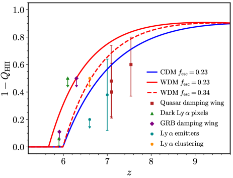
أخيرا، استخدمنا الكسور المؤينة الناتجة لحساب العمق البصري لـ CMB:
| (12) |
حيث إن هي سرعة الضوء؛ و هو مقطع طومسون العرضي؛ و هو معامل هابل. و هو عدد الإلكترونات الحرة لكل نواة هيدروجين. نعد الهيليوم مؤينا مرة واحدة بالمعدل نفسه للهيدروجين من أجل ومؤينا مرتين عند ، وهو ما يتسق مع الأرصاد الحديثة (Worseck et al., 2018). ويعرض الشكل 8 نتائجنا للعمق البصري.
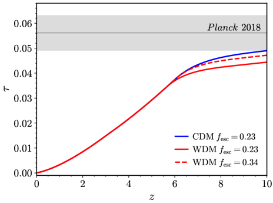
يعاني نموذج WDM 3 keV في بلوغ مستوى الثقة لقياس Planck للعمق البصري باستخدام المستوحاة من CDM. وهذه النتيجة عاقبة مباشرة لتأخر إعادة التأين المبين في الشكل 7. ويمكن تفسير العمق البصري المنخفض حتى في نتائج CDM لدينا جزئيا بنقص بيانات المحاكاة عند . وعلاوة على ذلك، فإن نمذجة إعادة التأين التي تتضمن عدم التجانس وعمليات فيزيائية أكثر ستنتج عموما تواريخ إعادة تأين أبطأ، وبالتالي قيمة أكبر.
4 الخلاصة
مع المنشآت القادمة مثل ALMA وJWST، ستكون لدينا إمكانية الوصول إلى بيانات غير مسبوقة عن الكون عند الانزياح الأحمر العالي وعن تشكل المجرات الأولى وخصائصها. فالبيانات حساسة للمرحلة المبكرة من تشكل البنى، ومن ثم قد تساعد في إلقاء الضوء على طبيعة المادة المظلمة. في هذه الورقة، نقدم مجموعة كبيرة من المحاكيات الكونية الهيدروديناميكية عالية الدقة لتشكل المجرات، منفذة في نموذجين كونيين مختلفين، المادة المظلمة الباردة (CDM) والمادة المظلمة الدافئة (WDM). وبالنسبة إلى محاكيات WDM، اخترنا كتلة جسيم مقدارها 3 keV، بما يتفق مع القيود الحالية (Iršič et al., 2017).
تغطي محاكياتنا مدى الانزياح الأحمر وتمتد على ثلاث رتب مقدار في كتلة الهالة، من إلى (عند ) وأكثر من أربع رتب في الكتلة النجمية، وذلك لمجموع 38 محاكاة تقريب فردية بين النموذجين الكونيين. وبالإضافة إلى مجرة التقريب الرئيسية، نضم جميع الهالات التي تحتوي على أكثر من 10,000 جسيم، مما ينتج أكثر من 100 مجرة عند . وقد أجريت المحاكيات في النموذجين الكونيين المختلفين بالتنفيذ نفسه للفيزياء الباريونية كما في مشروع NIHAO (Wang et al., 2015)، الذي أثبت نجاحا كبيرا في إعادة إنتاج خصائص رصدية عدة للمجرات عند الانزياحين الأحمرين المنخفض والمتوسط (Wang et al., 2015; Dutton et al., 2017)، وعلى مدى كتل ممتد جدا (e.g. Macciò et al., 2017; Buck et al., 2018).
تمتلك محاكيات WDM دالة كتلة نجمية أدنى بصورة منهجية عند الكتل المنخفضة. ويعود هذا العجز إلى تضافر ثلاثة مؤثرات: كبح عدد الهالات التي تقل كتلتها عن ، وكفاءة تشكل نجوم أدنى قليلا عند كتلة هالة ثابتة، وكسر أكبر من الهالات المظلمة للكتل دون . وعند جميع الانزياحات الحمراء، تبدأ دالتا الكتلة في التباعد عند كتلة نجمية قدرها . ويبلغ الفرق ذروته عند نحو رتبة مقدار عند ، ويكون أوضح عند الانزياح الأحمر الأعلى. وللأسف، بالنسبة إلى مرشح واقعي قدره 3 keV، تقع هذه الفروق على مقاييس كتلية لا تستطيع المنشآت الحالية الوصول إليها بعد، مثل Hubble Space Telescope.
كما يظهر تشكل البنى المتأخر في نماذج WDM في معدل كثافة تشكل النجوم الكلي (معدل تشكل النجوم لكل وحدة حجم) بدلالة الانزياح الأحمر، وهو أدنى في WDM بنحو معامل من عدة أضعاف مقارنة بـ CDM عند الانزياح الأحمر العالي. وبحلول ، تصبح هذه الكمية متشابهة جدا في هذين النموذجين.
وأخيرا، تترك تواريخ تشكل النجوم المختلفة في النموذجين الكونيين أيضا أثرا في تاريخ إعادة تأين الكون. فعند كسر هروب فوتونات ثابت ()، يكون كسر الهيدروجين المتعادل أعلى بنحو 0.3 في WDM لمدى انزياح أحمر بين ؛ ويلزم كسر هروب أكبر () من أجل التوفيق بين WDM والبيانات الحالية والحصول على كون مؤين تماما بحلول . ويظهر الأثر نفسه في العمق البصري لـ CMB، حيث لا تتسق WDM مع قيود Planck من أجل ، ويلزم مقدار أكبر حتى من 0.34 لمطابقة البيانات.
تشير نتائجنا إلى أن الانزياح الأحمر العالي واحد من أفضل المواضع للبحث عن بصمة مرشح دافئ محتمل في تشكل البنى، بما يتفق مع دراسات حديثة من Corasaniti et al. (2017). وحتى مع كتلة دافئة نسبيا مقدارها 3 keV، يترك تشكل البنى المتأخر في WDM أثرا مميزا في كميات قابلة للرصد، مثل دالة الكتلة النجمية، وفي تطور إعادة التأين الكوني. ومن جهة أخرى، وكما أظهر Villanueva-Domingo et al. (2018) حديثا، فإن مقارنة حاسمة مع البيانات الحالية تعوقها في الوقت الراهن قلة معرفتنا بكيفية تمثيل الجانب «الباريوني» من تشكل البنى بالمعاملات، مثل كسر هروب فوتونات UV. وتعزز نتائجنا، بالاشتراك مع أعمال سابقة، الحاجة إلى الجمع بين تشكل المجرات وعلم الكونيات إذا أردنا إلقاء الضوء على طبيعة المكونات المظلمة في كوننا.
شكر وتقدير
يعرب المؤلفون عن امتنانهم لمركز غاوس للحوسبة الفائقة e.V. (www.gauss-centre.eu) لتمويل هذا المشروع بتوفير زمن حوسبة على الحاسوب الفائق GCS Supercomputer SuperMUC في مركز Leibniz Supercomputing Centre (www.lrz.de)، وكذلك موارد الحوسبة عالية الأداء في New York University Abu Dhabi.
References
- Bergström (2012) Bergström L., 2012, Annalen der Physik, 524, 479
- Bertone et al. (2005) Bertone G., Hooper D., Silk J., 2005, Phys. Rep., 405, 279
- Bertschinger (2001) Bertschinger E., 2001, ApJS, 137, 1
- Bode et al. (2001) Bode P., Ostriker J. P., Turok N., 2001, ApJ, 556, 93
- Bose et al. (2016) Bose S., Frenk C. S., Hou J., Lacey C. G., Lovell M. R., 2016, MNRAS, 463, 3848
- Bouwens et al. (2015) Bouwens R. J., et al., 2015, ApJ, 803, 34
- Bouwens et al. (2017) Bouwens R. J., Oesch P. A., Illingworth G. D., Ellis R. S., Stefanon M., 2017, ApJ, 843, 129
- Buck et al. (2018) Buck T., Macciò A. V., Dutton A. A., Obreja A., Frings J., 2018, preprint, (arXiv:1804.04667)
- Bullock et al. (2000) Bullock J. S., Kravtsov A. V., Weinberg D. H., 2000, ApJ, 539, 517
- Carucci & Corasaniti (2019) Carucci I. P., Corasaniti P.-S., 2019, Phys. Rev. D, 99, 023518
- Ceverino et al. (2017) Ceverino D., Glover S. C. O., Klessen R. S., 2017, MNRAS, 470, 2791
- Chornock et al. (2013) Chornock R., Berger E., Fox D. B., Lunnan R., Drout M. R., Fong W.-f., Laskar T., Roth K. C., 2013, ApJ, 774, 26
- Colín et al. (2000) Colín P., Avila-Reese V., Valenzuela O., 2000, ApJ, 542, 622
- Colín et al. (2008) Colín P., Valenzuela O., Avila-Reese V., 2008, ApJ, 673, 203
- Corasaniti et al. (2017) Corasaniti P. S., Agarwal S., Marsh D. J. E., Das S., 2017, Phys. Rev. D, 95, 083512
- Das et al. (2018) Das S., Mondal R., Rentala V., Suresh S., 2018, J. Cosmology Astropart. Phys., 8, 045
- Davies et al. (2018) Davies F. B., et al., 2018, ApJ, 864, 142
- Dayal et al. (2015) Dayal P., Mesinger A., Pacucci F., 2015, ApJ, 806, 67
- Dayal et al. (2017) Dayal P., Choudhury T. R., Bromm V., Pacucci F., 2017, ApJ, 836, 16
- Di Cintio et al. (2014) Di Cintio A., Brook C. B., Macciò A. V., Stinson G. S., Knebe A., Dutton A. A., Wadsley J., 2014, MNRAS, 437, 415
- Dixon et al. (2016) Dixon K. L., Iliev I. T., Mellema G., Ahn K., Shapiro P. R., 2016, MNRAS, 456, 3011
- Dutton et al. (2016) Dutton A. A., Macciò A. V., Frings J., Wang L., Stinson G. S., Penzo C., Kang X., 2016, MNRAS, 457, L74
- Dutton et al. (2017) Dutton A. A., et al., 2017, MNRAS, 467, 4937
- Faisst (2016) Faisst A. L., 2016, ApJ, 829, 99
- Foreman-Mackey et al. (2013) Foreman-Mackey D., Hogg D. W., Lang D., Goodman J., 2013, PASP, 125, 306
- Frings et al. (2017) Frings J., Macciò A., Buck T., Penzo C., Dutton A., Blank M., Obreja A., 2017, MNRAS, 472, 3378
- Gao & Theuns (2007) Gao L., Theuns T., 2007, Science, 317, 1527
- Gnedin (2000) Gnedin N. Y., 2000, ApJ, 542, 535
- Governato et al. (2010) Governato F., et al., 2010, Nature, 463, 203
- Greig et al. (2017) Greig B., Mesinger A., Haiman Z., Simcoe R. A., 2017, MNRAS, 466, 4239
- Greig et al. (2019) Greig B., Mesinger A., Bañados E., 2019, MNRAS, 484, 5094
- Gutcke et al. (2016) Gutcke T. A., Stinson G. S., Macciò A. V., Wang L., Dutton A. A., 2016, ArXiv e-prints, 1602.06956,
- Haardt & Madau (2012) Haardt F., Madau P., 2012, ApJ, 746, 125
- Herpich et al. (2014) Herpich J., Stinson G. S., Macciò A. V., Brook C., Wadsley J., Couchman H. M. P., Quinn T., 2014, MNRAS, 437, 293
- Iršič et al. (2017) Iršič V., et al., 2017, Phys. Rev. D, 96, 023522
- Klypin et al. (1999) Klypin A., Kravtsov A. V., Valenzuela O., Prada F., 1999, ApJ, 522, 82
- Knollmann & Knebe (2011) Knollmann S. R., Knebe A., 2011, AHF: Amiga’s Halo Finder (ascl:1102.009)
- Kuhlen & Faucher-Giguère (2012) Kuhlen M., Faucher-Giguère C.-A., 2012, Monthly Notices of the Royal Astronomical Society, 423, 862
- Lapi & Danese (2015) Lapi A., Danese L., 2015, J. Cosmology Astropart. Phys., 9, 003
- Lopez-Honorez et al. (2017) Lopez-Honorez L., Mena O., Palomares-Ruiz S., Villanueva-Domingo P., 2017, Phys. Rev. D, 96, 103539
- Lovell et al. (2016) Lovell M. R., et al., 2016, MNRAS, 461, 60
- Lovell et al. (2018) Lovell M. R., et al., 2018, MNRAS, 477, 2886
- Ma et al. (2018) Ma X., et al., 2018, MNRAS, 478, 1694
- Macciò & Fontanot (2010) Macciò A. V., Fontanot F., 2010, MNRAS, 404, L16
- Macciò et al. (2010) Macciò A. V., Kang X., Fontanot F., Somerville R. S., Koposov S., Monaco P., 2010, MNRAS, 402, 1995
- Macciò et al. (2012) Macciò A. V., Paduroiu S., Anderhalden D., Schneider A., Moore B., 2012, MNRAS, 424, 1105
- Macciò et al. (2016) Macciò A. V., Udrescu S. M., Dutton A. A., Obreja A., Wang L., Stinson G. R., Kang X., 2016, MNRAS, 463, L69
- Macciò et al. (2017) Macciò A. V., Frings J., Buck T., Penzo C., Dutton A. A., Blank M., Obreja A., 2017, MNRAS, 472, 2356
- Macciò et al. (2019) Macciò A. V., Frings J., Buck T., Dutton A. A., Blank M., Obreja A., Dixon K. L., 2019, MNRAS, 484, 5400
- McGreer et al. (2011) McGreer I. D., Mesinger A., Fan X., 2011, MNRAS, 415, 3237
- McGreer et al. (2015) McGreer I. D., Mesinger A., D’Odorico V., 2015, MNRAS, 447, 499
- McQuinn et al. (2008) McQuinn M., Lidz A., Zaldarriaga M., Hernquist L., Dutta S., 2008, MNRAS, 388, 1101
- Moore (1994) Moore B., 1994, Nature, 370, 629
- Moore et al. (1999) Moore B., Ghigna S., Governato F., Lake G., Quinn T., Stadel J., Tozzi P., 1999, ApJ, 524, L19
- Moster et al. (2013) Moster B. P., Naab T., White S. D. M., 2013, MNRAS, 428, 3121
- Oñorbe et al. (2015) Oñorbe J., Boylan-Kolchin M., Bullock J. S., Hopkins P. F., Kereš D., Faucher-Giguère C.-A., Quataert E., Murray N., 2015, MNRAS, 454, 2092
- Obreja et al. (2016) Obreja A., Stinson G. S., Dutton A. A., Macciò A. V., Wang L., Kang X., 2016, MNRAS, 459, 467
- Ota et al. (2008) Ota K., et al., 2008, ApJ, 677, 12
- Ouchi et al. (2010) Ouchi M., et al., 2010, ApJ, 723, 869
- Paardekooper et al. (2015) Paardekooper J.-P., Khochfar S., Dalla Vecchia C., 2015, MNRAS, 451, 2544
- Penzo et al. (2014) Penzo C., Macciò A. V., Casarini L., Stinson G. S., Wadsley J., 2014, MNRAS, 442, 176
- Planck Collaboration et al. (2014) Planck Collaboration et al., 2014, A&A, 571, A16
- Planck Collaboration et al. (2016) Planck Collaboration et al., 2016, A&A, 596, A108
- Planck Collaboration et al. (2018) Planck Collaboration et al., 2018, arXiv e-prints,
- Pontzen et al. (2013) Pontzen A., Roskar R., Stinson G., Woods R., 2013, pynbody: N-Body/SPH analysis for python (ascl:1305.002)
- Rosdahl et al. (2018) Rosdahl J., et al., 2018, MNRAS, 479, 994
- Roszkowski et al. (2018) Roszkowski L., Sessolo E. M., Trojanowski S., 2018, Reports on Progress in Physics, 81, 066201
- Rutkowski et al. (2017) Rutkowski M. J., et al., 2017, ApJ, 841, L27
- Sawala et al. (2016) Sawala T., et al., 2016, MNRAS, 457, 1931
- Schechter (1976) Schechter P., 1976, ApJ, 203, 297
- Schroeder et al. (2013) Schroeder J., Mesinger A., Haiman Z., 2013, Monthly Notices of the Royal Astronomical Society, 428, 3058
- Shao et al. (2013) Shao S., Gao L., Theuns T., Frenk C. S., 2013, MNRAS, 430, 2346
- Shen et al. (2010) Shen S., Wadsley J., Stinson G., 2010, MNRAS, 407, 1581
- Steidel et al. (2018) Steidel C. C., Bogosavljević M., Shapley A. E., Reddy N. A., Rudie G. C., Pettini M., Trainor R. F., Strom A. L., 2018, ApJ, 869, 123
- Stinson et al. (2013) Stinson G. S., Brook C., Macciò A. V., Wadsley J., Quinn T. R., Couchman H. M. P., 2013, MNRAS, 428, 129
- Stinson et al. (2015) Stinson G. S., et al., 2015, MNRAS, 454, 1105
- Storey & Hummer (1995) Storey P. J., Hummer D. G., 1995, MNRAS, 272, 41
- Tan et al. (2016) Tan W.-W., Wang F. Y., Cheng K. S., 2016, ApJ, 829, 29
- Topping & Shull (2015) Topping M. W., Shull J. M., 2015, ApJ, 800, 97
- Trebitsch et al. (2017) Trebitsch M., Blaizot J., Rosdahl J., Devriendt J., Slyz A., 2017, MNRAS, 470, 224
- Viel et al. (2005) Viel M., Lesgourgues J., Haehnelt M. G., Matarrese S., Riotto A., 2005, Phys. Rev. D, 71, 063534
- Villanueva-Domingo et al. (2018) Villanueva-Domingo P., Gnedin N. Y., Mena O., 2018, ApJ, 852, 139
- Wadsley et al. (2004) Wadsley J. W., Stadel J., Quinn T., 2004, Nature, 9, 137
- Wadsley et al. (2017) Wadsley J. W., Keller B. W., Quinn T. R., 2017, MNRAS, 471, 2357
- Wang et al. (2015) Wang L., Dutton A. A., Stinson G. S., Macciò A. V., Penzo C., Kang X., Keller B. W., Wadsley J., 2015, MNRAS, 454, 83
- Wang et al. (2016) Wang L., Dutton A. A., Stinson G. S., Macciò A. V., Gutcke T., Kang X., 2016, ArXiv e-prints, 1601.00967,
- Worseck et al. (2018) Worseck G., Davies F. B., Hennawi J. F., Prochaska J. X., 2018, arXiv e-prints,
- Yèche et al. (2017) Yèche C., Palanque-Delabrouille N., Baur J., du Mas des Bourboux H., 2017, J. Cosmology Astropart. Phys., 6, 047
- Zolotov et al. (2012) Zolotov A., et al., 2012, ApJ, 761, 71
Appendix A قيم ملاءمة المعاملات
في هذا الملحق، نقدم المعاملات المشتقة من إجراء ملاءمة MCMC لمعظم العلاقات المعروضة في النص. يبين الجدول 4 معاملات أفضل الملاءمة لدينا لدالة كتلة الهالات عند في نموذجي CDM وWDM 3 keV الكونيين، وفقا للمعادلة (4). ويتضمن الجدول 5 القيم الوسيطة وقيم معاملات 1 لعلاقة -، وهي خطية في الفضاء اللوغاريتمي-اللوغاريتمي. ويعطي الجدول 6 الكميات نفسها لكسر المجرات المظلمة، كما تصفه المعادلة (5).
| Cosmology | ||||||
|---|---|---|---|---|---|---|
| 5 | CDM | 52.93 | 3.641 | 15.31 | 11.05 | 0.1315 |
| WDM | 48.99 | 3.863 | 16.06 | 8.574 | 0.2371 | |
| 6 | CDM | 53.23 | 3.851 | 17.12 | 9.568 | 0.1462 |
| WDM | 53.60 | 4.331 | 14.72 | 9.092 | 0.2569 | |
| 7 | CDM | 47.86 | 3.819 | 14.86 | 8.572 | 0.1862 |
| WDM | 62.80 | 5.0117 | 17.48 | 9.201 | 0.2411 | |
| 8 | CDM | 54.53 | 4.338 | 16.04 | 8.975 | 0.1837 |
| WDM | 60.06 | 4.987 | 14.13 | 9.495 | 0.2628 | |
| 9 | CDM | 51.62 | 4.274 | 15.18 | 8.557 | 0.1963 |
| WDM | 58.73 | 4.960 | 15.83 | 8.878 | 0.2616 | |
| 10 | CDM | 54.11 | 4.652 | 11.09 | 9.837 | 0.2199 |
| WDM | 65.11 | 5.537 | 21.02 | 8.175 | 0.2643 |
| Cosmology | slope | intercept | |
|---|---|---|---|
| 5 | CDM | ||
| WDM | |||
| 6 | CDM | ||
| WDM | |||
| 7 | CDM | ||
| WDM | |||
| 8 | CDM | ||
| WDM | |||
| 9 | CDM | ||
| WDM | |||
| 10 | CDM | ||
| WDM |
| Cosmology | |||
|---|---|---|---|
| 5 | CDM | ||
| WDM | |||
| 6 | CDM | ||
| WDM | |||
| 7 | CDM | ||
| WDM | |||
| 8 | CDM | ||
| WDM | |||
| 9 | CDM | ||
| WDM | |||
| 10 | CDM | ||
| WDM |
| slope | intercept | |
|---|---|---|
| 5 | 0.999 | |
| 6 | 1.019 | |
| 7 | 1.070 | |
| 8 | 1.030 | |
| 9 | 0.9930 | |
| 10 | 0.9994 |